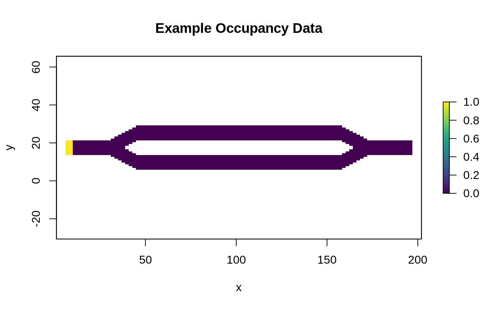

This tutorial shows the basics of how to use the package to calculate and visualize several metrics. It utilizes the package’s built-in data, which is the same example data used in Fletcher et al. (2019).
# "Load" the data. In this case we are using data built into the package. # In practice, users will likely load raster data using the raster() function # from the raster package. res_data <- samc::ex_res_data abs_data <- samc::ex_abs_data occ_data <- samc::ex_occ_data # Plot the data and make sure it looks good. The built-in data is in matrices, # so we use the raster() function to help with the plotting. Note that when # matrices are used by the package, it sets the extents based on the number of # rows/cols. We do the same thing here when converting to a raster, otherwise # the default extents will be (0,1) for both x and y, which is not only # uninformative, but can result in "stretching" when visualizing datasets # based non-square matrices. plot(raster(res_data, xmn = 1, xmx = ncol(res_data), ymn = 1, ymx = nrow(res_data)), main = "Example Resistance Data", xlab = "x", ylab = "y", col = viridis(256)) plot(raster(abs_data, xmn = 1, xmx = ncol(abs_data), ymn = 1, ymx = nrow(abs_data)), main = "Example Absorption Data", xlab = "x", ylab = "y", col = viridis(256)) plot(raster(occ_data, xmn = 1, xmx = ncol(occ_data), ymn = 1, ymx = nrow(occ_data)), main = "Example Occupancy Data", xlab = "x", ylab = "y", col = viridis(256))

samc Object# Create a `samc-class` object using the resistance and absorption data. We use the # recipricol of the arithmetic mean for calculating the transition matrix. Note, # the input data here are matrices, not RasterLayers. If using RasterLayers, the # `latlon` parameter must be set. samc_obj <- samc(res_data, abs_data, tr_fun = function(x) 1/mean(x)) # Print out the samc object and make sure everything is filled out. Try to # double check some of the values, such as the nrows/ncols of the landscape # data. The dimensions of the matrix (slot p) should be the number of non-NA # cells in your data +1. In this case, our data has 2624 non-NA cells, so the # matrix should be 2625 x 2625 str(samc_obj) #> Formal class 'samc' [package "samc"] with 5 slots #> ..@ p :Formal class 'dgCMatrix' [package "Matrix"] with 6 slots #> .. .. ..@ i : int [1:21793] 1 115 116 117 0 2 116 117 118 1 ... #> .. .. ..@ p : int [1:2626] 0 4 9 14 19 24 29 34 39 44 ... #> .. .. ..@ Dim : int [1:2] 2625 2625 #> .. .. ..@ Dimnames:List of 2 #> .. .. .. ..$ : NULL #> .. .. .. ..$ : NULL #> .. .. ..@ x : num [1:21793] 0.226 0.138 0.163 0.104 0.293 ... #> .. .. ..@ factors : list() #> ..@ source : chr "map" #> ..@ map :Formal class 'RasterLayer' [package "raster"] with 12 slots #> .. .. ..@ file :Formal class '.RasterFile' [package "raster"] with 13 slots #> .. .. .. .. ..@ name : chr "" #> .. .. .. .. ..@ datanotation: chr "FLT4S" #> .. .. .. .. ..@ byteorder : chr "little" #> .. .. .. .. ..@ nodatavalue : num -Inf #> .. .. .. .. ..@ NAchanged : logi FALSE #> .. .. .. .. ..@ nbands : int 1 #> .. .. .. .. ..@ bandorder : chr "BIL" #> .. .. .. .. ..@ offset : int 0 #> .. .. .. .. ..@ toptobottom : logi TRUE #> .. .. .. .. ..@ blockrows : int 0 #> .. .. .. .. ..@ blockcols : int 0 #> .. .. .. .. ..@ driver : chr "" #> .. .. .. .. ..@ open : logi FALSE #> .. .. ..@ data :Formal class '.SingleLayerData' [package "raster"] with 13 slots #> .. .. .. .. ..@ values : logi [1:6868] FALSE FALSE FALSE FALSE FALSE FALSE ... #> .. .. .. .. ..@ offset : num 0 #> .. .. .. .. ..@ gain : num 1 #> .. .. .. .. ..@ inmemory : logi TRUE #> .. .. .. .. ..@ fromdisk : logi FALSE #> .. .. .. .. ..@ isfactor : logi FALSE #> .. .. .. .. ..@ attributes: list() #> .. .. .. .. ..@ haveminmax: logi TRUE #> .. .. .. .. ..@ min : int 0 #> .. .. .. .. ..@ max : int 1 #> .. .. .. .. ..@ band : int 1 #> .. .. .. .. ..@ unit : chr "" #> .. .. .. .. ..@ names : chr "" #> .. .. ..@ legend :Formal class '.RasterLegend' [package "raster"] with 5 slots #> .. .. .. .. ..@ type : chr(0) #> .. .. .. .. ..@ values : logi(0) #> .. .. .. .. ..@ color : logi(0) #> .. .. .. .. ..@ names : logi(0) #> .. .. .. .. ..@ colortable: logi(0) #> .. .. ..@ title : chr(0) #> .. .. ..@ extent :Formal class 'Extent' [package "raster"] with 4 slots #> .. .. .. .. ..@ xmin: num 0.5 #> .. .. .. .. ..@ xmax: num 202 #> .. .. .. .. ..@ ymin: num 0.5 #> .. .. .. .. ..@ ymax: num 34.5 #> .. .. ..@ rotated : logi FALSE #> .. .. ..@ rotation:Formal class '.Rotation' [package "raster"] with 2 slots #> .. .. .. .. ..@ geotrans: num(0) #> .. .. .. .. ..@ transfun:function () #> .. .. ..@ ncols : int 202 #> .. .. ..@ nrows : int 34 #> .. .. ..@ crs :Formal class 'CRS' [package "sp"] with 1 slot #> .. .. .. .. ..@ projargs: chr NA #> .. .. ..@ history : list() #> .. .. ..@ z : list() #> ..@ clumps : int 1 #> ..@ override: logi FALSE
# Convert the occupancy data to probability of occurrence
occ_prob_data <- occ_data / sum(occ_data, na.rm = TRUE)
# Calculate short- and long-term mortality metrics and long-term dispersal
short_mort <- mortality(samc_obj, occ_prob_data, time = 4800)
long_mort <- mortality(samc_obj, occ_prob_data)
long_disp <- dispersal(samc_obj, occ_prob_data)
#> Performing setup. This can take several minutes... Complete.
#> Calculating matrix inverse diagonal...
Calculating matrix inverse diagonal... Complete
#> Performing final calculations. This may take a few minutes... Complete.# Create rasters using the vector result data for plotting. short_mort_map <- map(samc_obj, short_mort) long_mort_map <- map(samc_obj, long_mort) long_disp_map <- map(samc_obj, long_disp) # Plot the mortality and dispersal results plot(short_mort_map, main = "Short-term Mortality", xlab = "x", ylab = "y", col = viridis(256)) plot(long_mort_map, main = "Long-term Mortality", xlab = "x", ylab = "y", col = viridis(256)) plot(long_disp_map, main = "Long-term Dispersal", xlab = "x", ylab = "y", col = viridis(256))